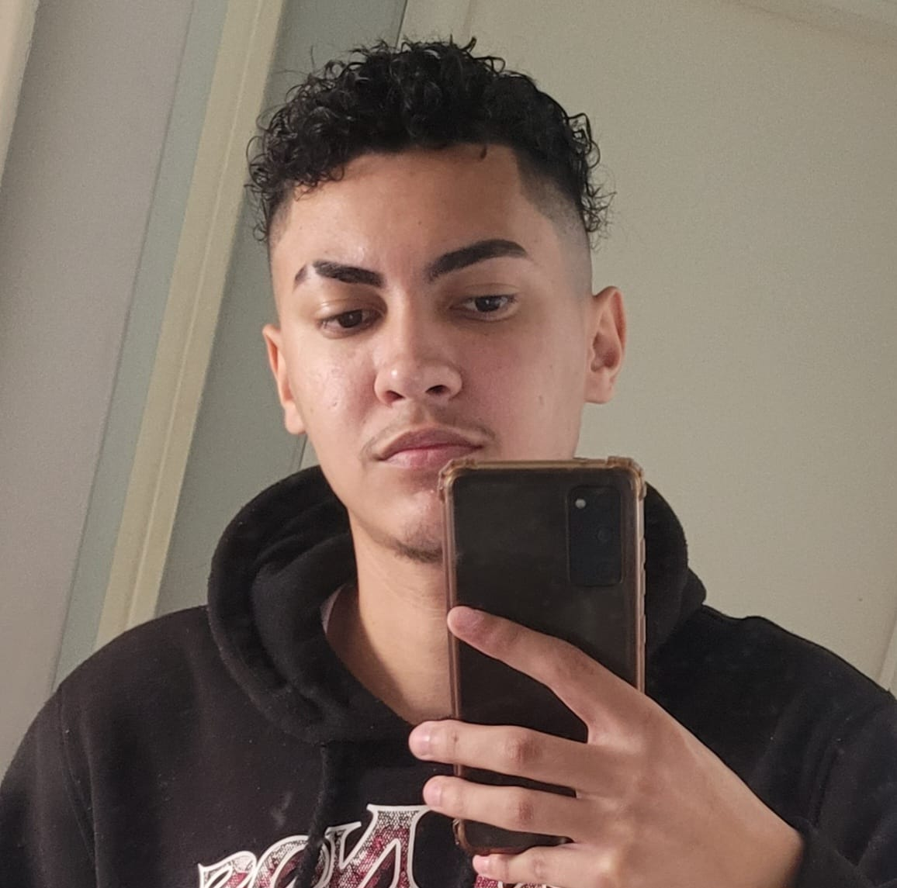
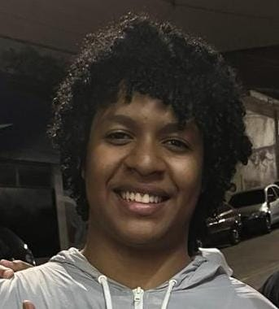

Conectando talentos ao futuro da tecnologia.
O TEIA nasce com a missão de aproximar pessoas, oportunidades e inovação através de uma rede inteligente voltada para crescimento profissional e inclusão tecnológica.
+1000
Usuários conectados
+350
Vagas direcionadas
+50
Empresas parceiras
98%
Satisfação dos usuários
Perguntas Frequentes
O TEIA direciona usuários para vagas?
Sim. O TEIA conecta usuários com oportunidades na área da tecnologia através de recomendações inteligentes e empresas parceiras.
Como funciona a conexão entre usuários e empresas?
Utilizamos um sistema inteligente para aproximar talentos e empresas com base em habilidades, interesses e oportunidades disponíveis.
O projeto possui foco em inclusão tecnológica?
Sim. O TEIA foi desenvolvido para incentivar inclusão, aprendizado e crescimento profissional no universo tecnológico.
Missão
Conectar talentos ao mercado da tecnologia através de uma plataforma moderna, inclusiva e inteligente.
Visão
Ser referência em conexão tecnológica e oportunidades para novos profissionais da área digital.
Valores
Inclusão, inovação, acessibilidade, aprendizado contínuo e desenvolvimento humano através da tecnologia.
Nossa Equipe
Thais Ferreira
Desenvolvedora
Cléverson Lima
Desenvolvedor